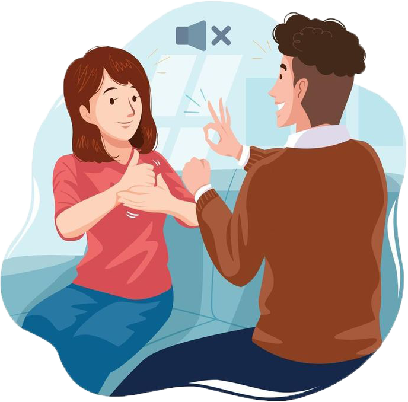

Realtime communication system
powered by A.I. for specially abled
A sign language is a way of communicating by using the hands and other parts of the body. It should not be confused with body language.Sign languages are an important way for deaf people to communicate.
